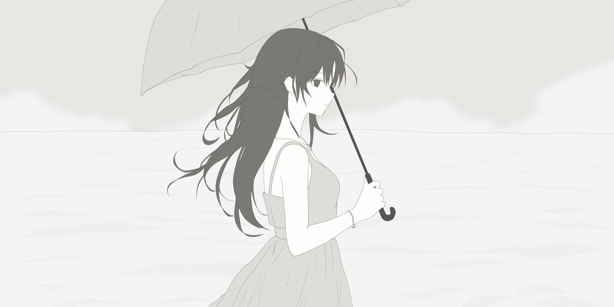

He and Me

Art by HazezZ
作品介绍
《He and Me》是一种带着暖白色与浅灰色调的回望。
过去的我完全无法理解那个人当时做出的选择，而时间的流逝却让我慢慢变得像他，也逐渐能理解他。那是一种带着迟缓理解、带着体温的感受。
歌曲的起点来自一个梦。
我梦见我们莫名其妙地心平气和地坐下来聊了一次天。
醒来时全部忘掉，只剩下那种被抽空久久萦绕在心的对话的真实感。
梦的敛光之下，我想要再写一点东西。
在和声与旋律上，我尝试了以前没有用过的走向。
我想要一种“成年人的傍晚”的感觉：
是释怀又不是完全释怀，是理解又仍然隐隐感伤。
最后我让和弦落回呼应Ipomoea alba的四级到三级，在不稳和洽之间轻轻坠落。
《He and Me》对我而言是一段经历的小终章。应该是Ipomoea alba最后一首了。
我很少去想听众会从这首歌里获得什么情绪，
因为对我而言，音乐技术永远是在服务感情的。
但当作品被交出去之后，我反而更希望他们注意到编曲、结构、和声的构造
至于情绪，只希望特定的人能看到。
可能是一点羞耻感，也可能是因为对我来说，写歌就是把情绪抛出去，再顺便耍点帅（指前卫编配）。
E major · D major
G#m7 → G6 · F#7
IV–iii · 对 Ipomoea alba 的呼应
清音交接、旋律贝斯与分散的延伸音
完整制作与编曲说明
开头与主歌 · Intro & Verse
开头的和声其实就是很普通的 I–IV–vi–V，不过其中一条吉他用了三个十六分音符为一组的音型，所以在正常的 4/4 里每一拍开始的时候音型的位置都在变，后面再稍微改一下这个循环。
与此同时氛围吉他又在用很长的音，每两个小节才从 E 到 D#、B、G# 这样往下走。下面的根音并不是一路下降的，但上面的长音是，所以即使和弦进行很普通，整个乐句还是有一条自己的线在往下走。我还挺喜欢这种不同声部各自在不同的时间尺度上运动的感觉。
副歌 · Chorus
副歌前半还是在 E major 的环境里，走 A 到 G#m，接下来却直接从 G#m7 滑到了 G6，而且这个 G 在上一小节的最后一拍就已经出现了。
这两个和弦里 B 这个音其实没有变，但它原本是 G#m 的小三度，到了 G 上却变成了大三度。与此同时 G# 和 D# 都往下移动了半音，刚好也是 E major 和 D major 两套音阶之间不同的两个音。
所以这里既是一个很小的和弦变化，又是整个调性环境的变化。上面原本一直在弹 B 和 F# 的氛围吉他在那一拍还突然换成了 C 和 G，多出来一点不太安分的色彩，下一小节再换回来。这里我自己还挺喜欢的。
副歌最后那个 F#7 是这首歌里我很喜欢的一个和弦。下面的节奏吉他和电钢琴都很明确地弹了大三度 A#，但人声旋律还是会唱到 A natural，甚至在后面的人声和声里还有 G natural。
现在回头看，如果从 dominant chord 的角度来理解，人声里的 A、G、D 实际上给这个 F#7 补充了 #9、b9 和 b13 的色彩。这些音出现在不同的旋律位置，并不是一直同时出现。我很喜欢这种下面已经很明确地是一个属七和弦了，上面的旋律却还在保留原来小调色彩的感觉，尤其是大小三度碰在一起的时候。
按照比较常规的功能和声，这个和弦可以往 Bm 走，但这里一直没有真正落到 Bm 上。我还挺喜欢这种张力已经建立起来，却没有按照预期解决的感觉。
副歌第二轮加进来的那条十六分音符的吉他，在 A 上弹的是 C#–D#–E–B，转到 G 的时候则把这个音型整个往下移了一个全音，变成 B–C#–D–A。虽然已经换了一套音阶，但这条吉他相对于根音还是在弹 3、#11、5、9，原来的 Lydian 色彩也就被保留下来了。
我还挺喜欢在转调的时候保留一些原来的动机，不一定要保留原本的音高，有时候保留音与音之间的关系就已经足够了。
副歌的贝斯写得稍微自由了一点，节奏吉他有些地方就是在很正常地扫和弦，所以我把不少和声里的延伸音放到了贝斯线上。比如 A 上除了普通的和弦音以外还弹了 B、G#、F#，也就是 9、maj7 和 13。
第二轮副歌刚开始的时候甚至没有直接弹 A，而是先弹了 G#–F#–E–D# 的一串下行音，第二拍才回到 A。反正上面的吉他和钢琴已经把这个和声交代得差不多了，贝斯也没必要每次都急着弹根音。我自己还是很喜欢在比较简单的扫弦伴奏下面写一些相对独立的贝斯线的。
电钢琴间奏 · Interlude
两段副歌之间的电钢琴间奏其实是把 IV–iii 这个东西先在 D major 里弹了一遍，再整体往上移一个全音回到 E major。除了最后为了接主歌稍微改了点东西，钢琴的旋律和下面的分解和弦基本上都是一起移动的。
这里我也没有因为上方换成了电钢琴和氛围吉他就重新写一套很轻的鼓，反而保留了前面主歌里的不少鼓点，甚至有几个小节是完全一样的。我还挺喜欢这种把原本用来配重型吉他的鼓拿去配电钢琴的感觉，下面还是在打一些比较前卫的节奏，上面却完全是另一种东西。
第二段主歌 · Verse II
第二段主歌是我写得比较开心的一段，两条清音吉他一开始是轮流弹同一个东西，后来逐渐开始同时弹，但又不是简单地 double track，而是不断交换各自的音型，一条弹前面比较主要的东西，另一条就在剩下的地方补一些音，下一小节又反过来。
后面两条吉他也会分别弹一个和弦里不同的音，比如 B 上一条在弹比较稳定的 1、3、5，另一条则一直在 E、D#、B、C# 之间转。两条吉他分开都不是什么特别复杂的东西，但我觉得合起来之后比单独写一条完整的分解和弦有意思很多。
最终段落 · Final Section
最后一次副歌结束的时候也没有再回到原来的 A，而是从 F#7 进入了 G，之后整首歌基本就在 G 和 F#m 之间走了。有意思的是，前面反复出现的 F# 明明一直是 dominant chord 的根音，到这里却终于变成了一个普通的小七和弦，之前伴奏里的 A# 也变回了 A natural。
现在回头看，前面人声和伴奏在大小三度上的那点矛盾，到这里倒是没有了，虽然整首歌最后还是没有回到一个很明确的主和弦上。
四级到三级其实并不是在最后才出现的，副歌前半的 Amaj7–G#m7 本身就是这个关系，后面的电钢琴间奏又分别在 D major 和 E major 里各走了一次 IV–iii，最后才完全停留在 G–F#m 的循环上。
我一直很喜欢四级到三级这个走向，两个基础七和弦之间的音几乎都可以通过半音或者全音的下行去连接，但又不是那种很有目的性的解决。这里也算是把 Ipomoea alba 里我很喜欢的那个和声关系，用不同的调、不同的 voicing 和完全不同的编制重新写了一遍。
最后 G 和 F#m 的这段虽然和声进行很简单，但 voicing 里其实还是放了挺多东西的。比如 G 上电钢琴有一个 G–E–F#–C#–E 的配置，除了根音以外几乎都在弹延伸音，甚至没有三度和五度，因为这些音已经被另外两条清音吉他的分解和弦补上了。
人声也会再补充 9 和 #11 之类的东西，所以整个段落合起来有很明显的 G Lydian / Gmaj13(#11) 的色彩。我越来越喜欢这种不用某一件乐器把整个和弦弹完整的写法，尤其在有失真吉他的时候，把不同的音分散到不同乐器和音区里会方便很多。
最后的节奏吉他也没有一直弹普通的 power chord，G 上一开始是 G–B–F#，后来换成 G–B–E，相当于在 maj7 和 6 之间切换，根音和三度都还是一样的。到了 F#m 则主要弹 F#–A–E，把小三度和小七度留下来。
我觉得这种三四个音的 voicing 在失真吉他上其实已经很够用了，其他的东西交给清音和电钢琴就好。没必要让节奏吉他自己去承担所有的和声信息。
Solo 与尾奏 · Solo & Outro
Solo 的和声还是前面那两个和弦，所以没有在这里另外写什么新的 chord progression，主要是靠旋律本身去发展。在 G 上我用了不少 C# 和 D 之间的来回运动，也就是 Lydian 的 #11 和 5，后面再慢慢增加音区跨度和音符密度。
最后那串十六分三连音其实是几个很短的三音音型不断重复，中间还混了不少八度跳跃，并不是很规整地往上或者往下跑一条音阶。最后人声在 Solo 还没完全结束的时候就已经进来了，之后再把整个重型编制拿掉。
这个 Solo 对我来说也更像是接过之前最终人声主题的情绪，再在结束前把音乐交还给人声。最后留下的 IV–iii，也让这首歌重新和 Ipomoea alba 连在了一起。
歌词（Part 1）
已经变得不爱吃甜食了、
将被毁掉的日子一并吞噬
两人的影子交叠
要是时间能在那天停滞
妄言后的数个无言清晨
乱窜的情绪还是无可奈何
似乎真的不属于我吗
旧疾复发的、泛潮明信片
只是夜晚落入你眼睛的画面我也回想不起
度过满天繁星的冬夜之后要该如何是好？
Call my name again
Like you used to do
两人虽然已经在不同世界里
但却越来越能看见你
Look into my eyes
With a gentle smile
即使我的爱也依旧留了下来
最后也成为了阻碍
歌词（Part 2）
我们要一直一直一直在一起 你说过
单纯的想法像抛开单块的箱头一般
我已经离开你了多远的距离？
好像一直都在做着梦
像普通下午你又弄丢了拨片 那样子
想着如果能够赶快送你新的就好了
梦中的电话却总是拨打不通
还有好多话没对你说
Call my name again
Like you used to do
两人虽然已经在不同世界里
但却越来越能看见你
Begging another embrace
But it never arrives
在我的眼睛里长出春天之前
请不要离开我的回忆
说过要一起看的海 后来我一个人去了
在这无法见面的城市里 阴天的骤雨
即使我不确定什么才是真实的
但早已习惯的阵阵刺痛 仍提醒着我
于是终于到了遇见我时你的年纪
于是又到了不能一起共赴的雨季